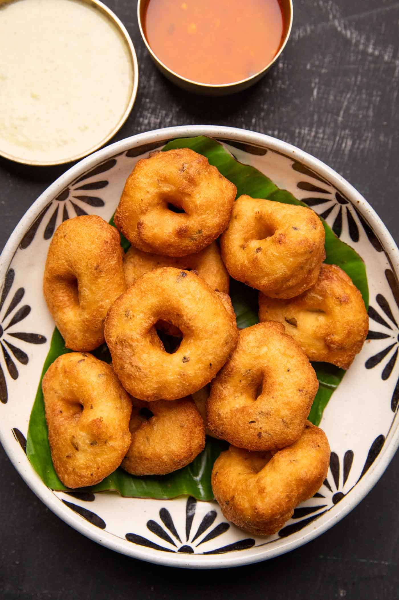

Ingredients
- 1 cup urad dal
- 1 green chili, chopped
- 1/4 tsp asafoetida (hing)
- Salt to taste
- Oil for deep frying
Instructions
- Soak urad dal for 4-5 hours and grind to a smooth batter.
- Add chopped chili, salt, and asafoetida. Mix well.
- Heat oil, shape batter into small doughnuts, and deep fry until golden.
- Serve hot with coconut chutney and sambar.
Tips
- Ensure oil is medium-hot for even cooking.
- Use wet hands to shape vadas to prevent sticking.
- Drain excess oil on paper towels for crispiness.